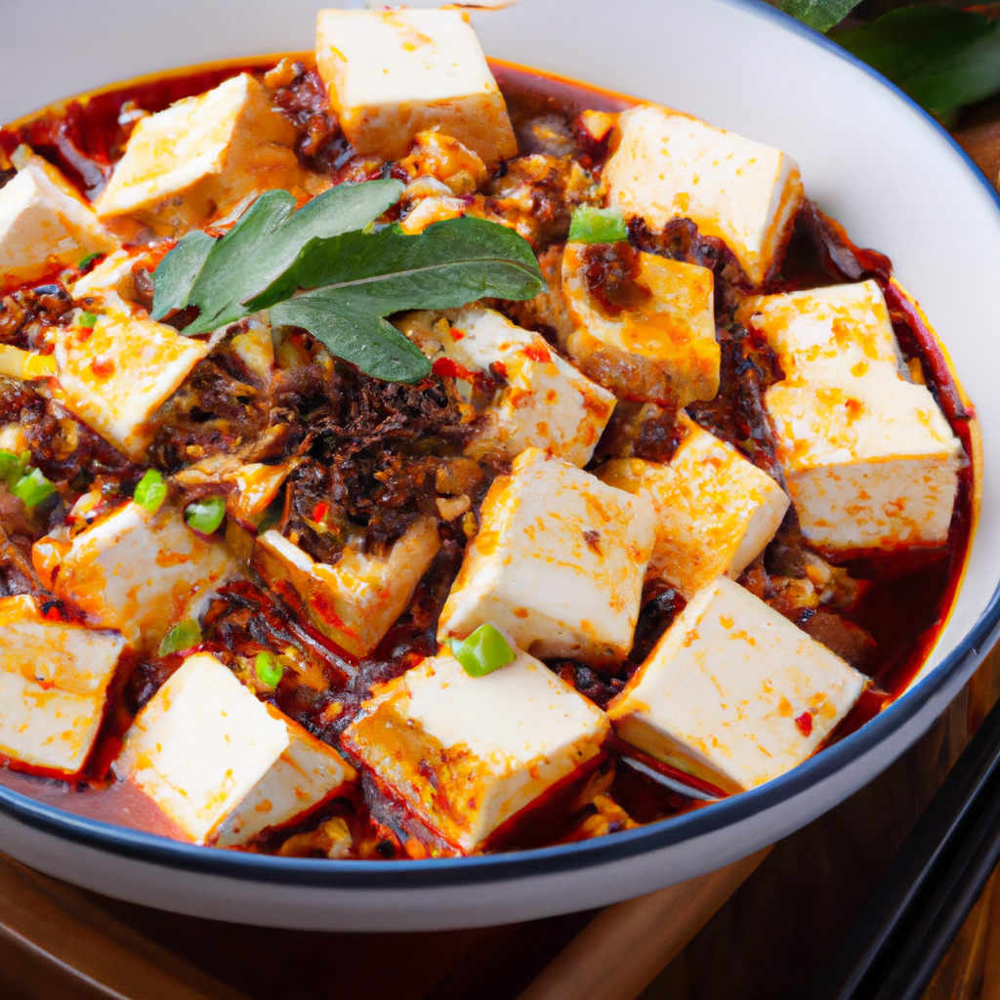

Happy Cooking
Recipe Title: Spicy Chicken Cubes Ingredients: - 2 chicken breasts, diced - 2 tablespoons of oil - 2 tablespoons of soy sauce - 2 tablespoons of Chinese rice wine - 1 teaspoon of sesame oil - 1 teaspoon of sugar - 1 teaspoon of chili paste - 2 cloves of garlic, minced - 2 teaspoons of minced ginger - 2 tablespoons of cornstarch Instructions: 1. In a medium bowl, combine the diced chicken, soy sauce, rice wine, sesame oil, sugar, chili paste, garlic, ginger, and cornstarch. Stir until everything is evenly coated. 2. Heat the oil in a large skillet over medium-high heat. 3. Add the chicken cubes to the hot oil and stir-fry for 5 minutes or until the chicken is golden brown and cooked through. 4. Serve the spicy chicken cubes hot. Enjoy!